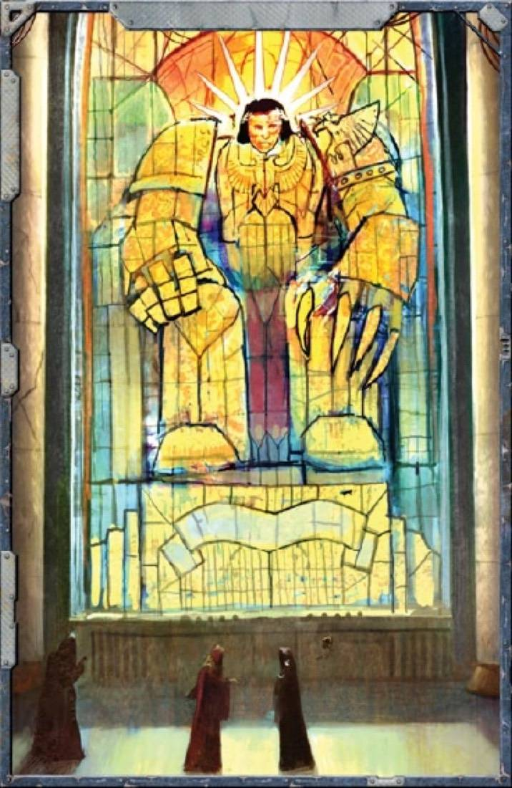

Imperial Cult
| Imperial Cult Cult Imperialis | |
|---|---|
Sigil of the Ecclesiarchy (Adeptus Ministorum) | |
| Type | State religion of the Imperium |
| Deity | The Emperor of Mankind, the God-Emperor |
| Scripture | The Lectitio Divinitatus and the sermons and pronouncements of the Ecclesiarchy |
| Church | Adeptus Ministorum (the Ecclesiarchy) |
| Head | The Ecclesiarch, a High Lord of Terra |
| Seat | Ecclesiarchical Palace, Terra |
| History | |
| Origin | Cults of the Great Crusade |
| Temple of the Saviour Emperor | M31 onward |
| State religion | Early M32 |
| Reformed | M36, by Sebastian Thor |
| Armed order | Adepta Sororitas |
| Not observed by | Adeptus Astartes, Adeptus Mechanicus |
The Imperial Cult, also called the Cult Imperialis, Imperial Creed or, in common speech, the Ecclesiarchy, is the official religion of the Imperium of Mankind. It teaches that the Emperor of Mankind is the one true god of humanity, an ascended divinity who walked among men and who now sits on the Golden Throne to protect them. It is administered by the state church, the Adeptus Ministorum, whose priests spread the Word of the Emperor across the galaxy.[1][2]
The Cult is perhaps the only thing that unites the countless worlds of the Imperium. Its forms vary enormously: the Emperor may be worshipped as a human patriarch, as a star-god, or as an aspect of nature. The Ecclesiarchy tolerates almost every variant so long as it accepts that there is a single Emperor, that he is a god, and that the faithful owe obedience to the High Lords and the hierarchy of the Imperium. The Cult is therefore both a religion and a mechanism of state.[1]
The Cult contradicts the Emperor's own teaching during the Great Crusade, the Imperial Truth, that he was a man and that there were no gods. It has nevertheless proved a powerful protection against Chaos, which feeds on the fears and doubts of men. Its belief in the Emperor is not shared by the Space Marines, who have never formally acknowledged his divinity, or by the Mechanicus, which worships the Emperor as the Omnissiah in the faith of the Cult Mechanicus.[1][2]
History
[edit]Great Crusade and the Lectitio Divinitatus
[edit]In the Great Crusade there was no church, and the veneration of the Emperor was forbidden by the Emperor himself. The Imperial Truth taught that he was a being of surpassing power and the rightful ruler of mankind, but a man. Yet ordinary citizens found that reason alone did not answer their need, and many turned to worship the Emperor as a god. These cults drew on a book, the Lectitio Divinitatus, written by the primarch Lorgar, which first declared that the Emperor was the incarnate god of humanity. The first cults arose on the primitive worlds that had regressed in the Age of Strife.[1][3]

Temple of the Saviour Emperor
[edit]
The cults multiplied after the Horus Heresy (005–014.M31). The Emperor's sacrifice at the Siege of Terra, and his interment upon the Golden Throne, were hailed as his ascension to full divinity within the Warp. Most of the cults faded, while others absorbed the weaker ones. The strongest was the Temple of the Saviour Emperor. It was based on Terra, and its leader was a respected officer of the Imperial Army who had fought at the Siege and renamed himself Fatidicus. His preaching spread through the reformed Astra Militarum and the Navy, and among the scribes and lesser adepts of the Administratum, who carried it to other worlds. When Fatidicus died at the age of a hundred and twenty, the Temple had more than a billion followers on Terra.[1]
In the aftermath of the Heresy the Temple offered a message of hope and unity. Rival sects that would not be absorbed were persecuted by mobs of its fanatical followers, a violence that the Temple officially disavowed and unofficially welcomed. By the early 32nd millennium nearly two-thirds of the Imperium's people followed it.[1]
Adeptus Ministorum
[edit]In the early 32nd millennium the High Lords recognised the Temple as the state religion of the Imperium. They gave it the official title of Adeptus Ministorum, though it remained known informally as the Ecclesiarchy, and made it an adeptus of the Imperium, separate from the Adeptus Terra. The High Lords had realised what a useful instrument a state religion could be for unifying the Imperium. In the middle of the millennium the Ecclesiarch Veneris II received a seat among the High Lords of Terra, which became permanent after three centuries, and when the War of the Beast began, in 544.M32, the Ecclesiarch Erekart Mesring sat on the council. The Ecclesiarch has been one of the most influential voices in the Senatorum since.[1][4]
Sects that differed from the creed were persecuted. The principal rival was the Confederation of Light, based on the world of Dimmamar, which preached poverty and humility and held that the church should stand apart from politics. The High Lords voted unanimously to support the first of the Wars of Faith against it, and the Astra Militarum, the Navy and thousands of fanatics of the Frateris Templar were unleashed. Only a few cells of the Confederation survived. By the end of the 33rd millennium every civilised world had a cathedral, and the wealth of the Ecclesiarchy was spent on ever more lavish buildings and on Wars of Faith whose aim was political power and not the saving of souls.[1]
Age of Apostasy
[edit]In the 36th millennium the struggle between the Ecclesiarchy and the Administratum produced the Age of Apostasy. The High Lord Goge Vandire, the 361st Master of the Administratum, usurped the office of Ecclesiarch and with it the Cult itself. His Reign of Blood was a series of purges, and he placed his own rule above that of the Emperor. It was ended by the reborn Confederation of Light of Sebastian Thor, a preacher who later became Ecclesiarch, and by the Brides of the Emperor who killed Vandire.[1]
The Ecclesiarchy was reformed on the principles of the Confederation. The reforms included the Decree Passive, which forbade the church to keep "men under arms", and the Brides of the Emperor became the Sisters of the Adepta Sororitas, who serve as the church's military arm and as the Chamber Militant of the new Ordo Hereticus of the Inquisition. Thor is revered as a saint. A few decades later the Apostate Cardinal Bucharis ruled much of the Imperium in the Plague of Unbelief, and was brought down by the Space Wolves and by his own people.[1][5]
Era Indomitus
[edit]The opening of the Great Rift at the end of the 41st millennium has fed a rise of apocalyptic cults. Doctrines of the End Times have always flourished toward the end of a millennium, and the Rift has made them more vivid. The Ecclesiarch Baldo Slyst was among those who resisted the reforms of the resurrected Roboute Guilliman, and he and the former Master of the Administratum led the Hexarchy conspiracy against the Lord Commander. His successor, Eos Ritira, sits on the reformed council.[6] To secure the support of the Cult for his reforms, Guilliman created the new rank of Militant-Apostolic, priests whose task is to reassure others of the faith that the primarch, who has spoken with the Emperor himself, is not a heretic. He prefers to choose them himself, and often picks free-thinkers from the lower ranks.[6]
Beliefs
[edit]The Imperial Creed
[edit]The Creed is a composite of native religions, the modifications made by missionaries and the pronouncements of the Ministorum's upper levels. Practices that are sacred on one world may be abhorrent on another. Certain tenets are fixed: that the Emperor once walked among men in the flesh, that he is a god, and that he is the one true god and no other may be worshipped beside him. Beyond that, the sanctioned texts vary widely. Some claim that the Emperor was a shaman born on Old Earth, others that he was any one of a thousand legendary figures. Each presents the view of a particular saint, wrapped in allegory.[1]
The Creed teaches that all humanity must be brought into the Imperium; that sapient aliens are dangers to mankind's rightful dominion of the galaxy; and that unsanctioned psychic power and mutation must be controlled or destroyed. Every human has a place in the Emperor's order, and for most it is at the bottom, following without question the instruction of those above. To question an order is heresy.[1]
Saints
[edit]The Ecclesiarchy declares exceptionally holy mortals to be saints, whose words and deeds are held to be the direct work of the Emperor. Millions have been recognised, often long after their deaths and after decades of consideration, among them crusade leaders, generals, teachers and the authors of tracts. Ecclesiarchs are commonly sainted after death. Saints are intercessors: the faithful pray to them to petition the Emperor on particular matters such as deliverance from aliens, safe passage through the Warp or a good harvest.[1]
Afterlife
[edit]The official position is that the Emperor judges every faithful soul after death and, if it is worthy, gives it a place in his celestial army. Interpretations vary for those not worthy but not damned: some say they are reborn, others that they wander the Warp as penance. The Cult also records many tales of the Emperor's servants returning from the Warp when the Imperium needs them.[1]
The sin of the psyker
[edit]The Ecclesiarchy holds that psychic power is dangerous and that untrained psykers are an invitation to daemons. It supports the system of the Black Ships. Psykers who repent can be sent to Terra to fuel the Golden Throne.[1]
Organisation
[edit]
Hierarchy
[edit]The head of the Adeptus Ministorum is the Ecclesiarch, high priest of the Cult, who has his seat in the Ecclesiarchical Palace on Terra. He is elected by the Holy Synod of arch-cardinals. He pursues the church's interests in the Senatorum Imperialis and prepares crusades and Wars of Faith. Below him the Imperium is organised into dioceses under cardinals of the sector synods, who hold their seats on shrine and cardinal worlds and rarely leave them. Beneath them are the pontifices, the arch-deacons, the deacons, the confessors and the preachers. Specialist ranks include missionaries, who spread the faith to new worlds; Redemptionists, who preach penance; and arch-exorcists and banishers, who deal with daemons.[1]

Missions, shrine worlds and pilgrimage
[edit]The Ecclesiarchy sends out mission fleets, whose flotillas record variants of the Cult across the galaxy, correct serious heresies and bring new human populations into the faith. Cathedrals stand in the capital of every populous world, and on hive worlds may occupy entire spires. Worlds of special sanctity, where a saint or the Emperor himself performed a great deed, are shrine worlds, and those governed by the church and home to a cardinal are cardinal worlds. Millions of pilgrims travel to them, and the pilgrimage has become an economic activity in its own right.[1]
Other bodies
[edit]- Adepta Sororitas
- The armed Orders Militant, the Sisters of Battle, who defend shrine worlds and serve the Ordo Hereticus.
- Schola Progenium
- State orphanages that raise the children of those who died in Imperial service in strict orthodox belief. Their graduates provide many officers, commissars, assassins and judges, and even Inquisitors.
- Frateris Templar and Frateris Militia
- Zealous lay militias of the church, associated with the Wars of Faith.
- Black Priests of Maccabeus
- A militant order of clerics established at the request of the Ordo Malleus.
Relations
[edit]- Inquisition
- The Ordo Hereticus watches the Ministorum. Priests often regard Radical Inquisitors as heretics.
- Adeptus Mechanicus and Adeptus Astartes
- Both deny the doctrine of the Cult. Fanatical priests have attempted to bring them to heel, with disastrous results.
- Administratum
- The two long competed for control of the Imperium. The Administratum's records and the Ecclesiarchy's faith still depend upon one another.
Timeline
[edit]| Date | Event |
|---|---|
| c. 798.M30[a] | Cults of the Emperor's divinity arise on primitive worlds during the Great Crusade, drawing on the Lectitio Divinitatus. |
| c. 015.M31[b] | The Temple of the Saviour Emperor becomes the strongest cult on Terra after the Heresy. |
| c. 010.M32[c] | The High Lords recognise the Temple as the state religion, under the official title Adeptus Ministorum. |
| 544.M32 | At the outset of the War of the Beast, the Ecclesiarch Erekart Mesring sits on the council of the High Lords of Terra. |
| c. 990.M33[d] | By the end of the 33rd millennium every civilised world has a cathedral, and the Wars of Faith have crushed the Confederation of Light. |
| M36 | During the Age of Apostasy, Goge Vandire usurps the office of Ecclesiarch and rules through the Reign of Blood. |
| 378.M36 | Vandire is killed by the Brides of the Emperor, and Sebastian Thor begins the reform of the Ecclesiarchy. |
| c. 379.M36[e] | The Decree Passive forbids the church to keep "men under arms", and the Brides become the Adepta Sororitas. |
| c. 410.M36[f] | The Apostate Cardinal Bucharis rules much of the Imperium during the Plague of Unbelief before he is brought down. |
| early M38[g] | A thousand Wars of Faith are launched against heretics, under the power of the Ministorum at its height. |
| 999.M41 | The opening of the Great Rift feeds a rise of apocalyptic cults. |
| c. 012.M42[h] | Roboute Guilliman creates the rank of Militant-Apostolic to secure the support of the Cult for his reforms. |
See also
[edit]Notes
[edit]- ^ Estimated; no record gives an exact year.
- ^ Estimated; no record gives an exact year.
- ^ Estimated; no record gives an exact year.
- ^ Estimated; no record gives an exact year. The Wars of Faith against the Confederation of Light are dated only to the 33rd millennium.
- ^ Estimated; no record gives an exact year.
- ^ Estimated; no record gives an exact year.
- ^ Estimated; no record gives an exact year.
- ^ Estimated; no record gives an exact year.
References
[edit]- ^ a b c d e f g h i j k l m n o p q Liber Ecclesiasticus (M37). Adeptus Ministorum.
- ^ a b Codex Imperialis (rev. 980.M41). Adeptus Terra.
- ^ Chronicles of the Heresy (sealed). Logos Historica Verita, Terra.
- ^ Lexicanum Martialis. Officio Militaris.
- ^ Liber Sororitas (M37). Adepta Sororitas, Ophelia VII.
- ^ a b Records of the Indomitus Crusade (ongoing). Office of the Lord Commander.